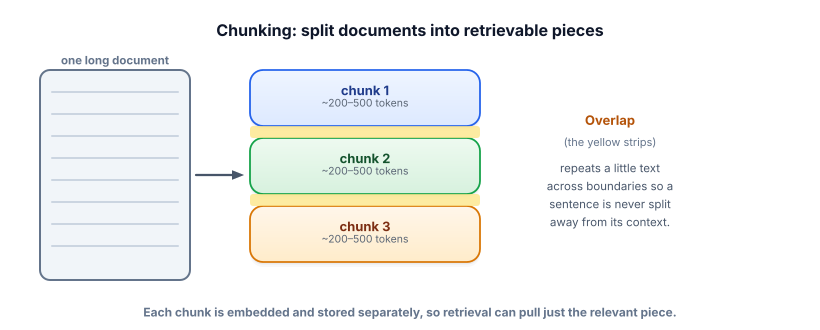
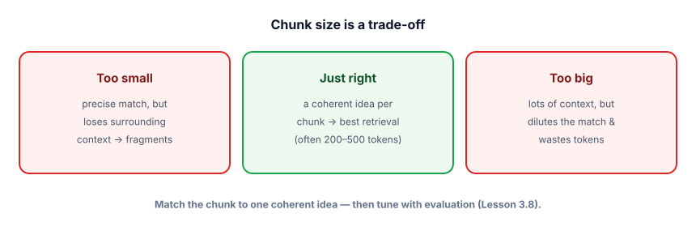

Chunking strategies
Retrieval doesn’t fetch documents — it fetches chunks. How you cut your text into chunks quietly determines whether the right information can ever be found. This is the most underrated lever in RAG, and the easiest to get wrong.
Why chunking decides everything downstream
You can’t embed and retrieve a whole 50-page manual as one vector — a single vector can’t represent that much, and you’d retrieve the entire thing or nothing. So you split documents into smaller chunks, embed each separately, and retrieve the few relevant ones. The catch: a chunk is the unit of retrieval. If a fact is split across two chunks, neither may score high enough to be retrieved. If a chunk is huge, the relevant sentence gets diluted by surrounding noise and the match weakens. Get chunking wrong and no amount of clever reranking later can recover the lost information.

A chunk is a contiguous span of a document that you embed and store as one retrievable unit. Chunk size is how big each one is (usually measured in tokens). Overlap is text shared between adjacent chunks — repeating, say, the last 50 tokens at the start of the next chunk — so a sentence or idea straddling a boundary still appears intact in at least one chunk.
The size trade-off

Strategies, from crude to smart
| Strategy | How it splits | When to use |
|---|---|---|
| Fixed-size | Every N tokens, with overlap | Simple baseline; works surprisingly well for prose |
| Recursive / structural | Prefer natural boundaries: paragraphs → sentences → words, only splitting smaller when too big | The sensible default — keeps sentences and paragraphs intact |
| Document-structure aware | Split on headings, list items, table rows, code blocks | Markdown, HTML, code, structured docs |
| Semantic | Split where the topic shifts (using embeddings) | When topic coherence matters and you can afford the extra compute |
See chunking happen
Drag the sliders. Watch how chunk size and overlap reshape what becomes retrievable. Tiny chunks fragment ideas; huge chunks swallow many topics into one blurry vector.
Chunk visualizer
A token-aware splitter with overlap, in plain Python. (In real projects, LangChain’s free RecursiveCharacterTextSplitter does this with nicer boundary handling — but seeing the mechanism once is worth it.)
def chunk_text(text, size=120, overlap=20):
"""Split into ~`size`-word chunks that overlap by `overlap` words."""
words = text.split()
step = size - overlap
chunks = []
for i in range(0, len(words), step):
chunk = " ".join(words[i:i + size])
if chunk:
chunks.append(chunk)
if i + size >= len(words):
break
return chunks
doc = open("manual.txt").read()
chunks = chunk_text(doc, size=120, overlap=20)
print(len(chunks), "chunks")
# attach metadata so you can cite + filter later — do this from day one
records = [{"text": c, "source": "manual.txt", "chunk_id": i} for i, c in enumerate(chunks)]Notice the metadata on each chunk (source, id). You’ll thank yourself later: it’s what lets you cite sources, filter by document, and debug which chunk produced an answer.
- The chunk is the unit of retrieval — chunking decides what can ever be found.
- Use overlap so ideas spanning a boundary survive intact in at least one chunk.
- Chunk size is a trade-off: too small fragments context, too big dilutes the match. Aim for one coherent idea (often ~200–500 tokens).
- Prefer recursive/structural splitting (respect paragraphs, headings, code) over blind fixed cuts.
- Attach metadata (source, id, section) to every chunk from the start — for citations, filtering, and debugging.
Your RAG bot answers questions about API docs well, except it keeps missing answers that depend on a code example following a heading. What’s the most likely chunking issue?
1. In the visualizer, set overlap to 0 and find a sentence that gets split across two chunks. Then add overlap and confirm it’s now intact somewhere. Why does this matter for retrieval?
2. You’re chunking a CSV-like FAQ where each Q&A is 1–2 sentences. What chunk strategy and size would you pick?
3. Why is attaching source and chunk_id metadata essential for a citable RAG system?
▸ Show solutions & reasoning
1. With no overlap, a sentence straddling a boundary is half in chunk A and half in chunk B — so the full idea isn’t in either, and a query matching that idea may retrieve neither well. Overlap repeats the boundary text, so the whole sentence appears intact in at least one chunk and can be matched and retrieved. Overlap is cheap insurance against boundary loss.
2. Use structure-aware chunking: one chunk per Q&A pair. Each pair is already a coherent, self-contained idea, so you don’t want to merge several (dilution) or split one (fragmentation). Size follows the content — roughly one Q&A each, no fixed cut needed.
3. Citations require pointing at a real source: source tells the user which document a fact came from, and chunk_id lets you locate the exact passage for verification or debugging. Without it, you can ground the answer but can’t say where it came from — and you can’t investigate when a chunk produces a wrong answer. Provenance is a data-modeling decision you make at chunk time.
Once fixed-size chunking stops being good enough, a few techniques earn their keep. Parent-document retrieval: embed and search over small chunks for precise matching, but return the larger parent section to the model so it has full context — best of both sizes. Semantic chunking: instead of cutting every N tokens, detect topic shifts (e.g., when consecutive sentences’ embeddings diverge) and split there, so each chunk is topically coherent. Contextual / “late” chunking: prepend a short summary of the document or section to each chunk before embedding, so an isolated chunk like “It costs $40” carries the context “(about the X200 blender)” and matches better.
And don’t forget non-prose. Tables often need row- or section-level chunks with the header repeated, or they retrieve as meaningless number soup. Code should be split on function/class boundaries, not arbitrary lines. The throughline: chunking is really about preserving retrievable meaning, so the smartest strategy is whatever keeps each unit a self-contained, matchable idea. Start with recursive splitting plus overlap and metadata; reach for these only when evaluation (Lesson 3.8) shows retrieval is the bottleneck.
You’ve got chunks. Now we turn them into searchable meaning — the embeddings step, applied to retrieval at scale. Next: embeddings for retrieval.